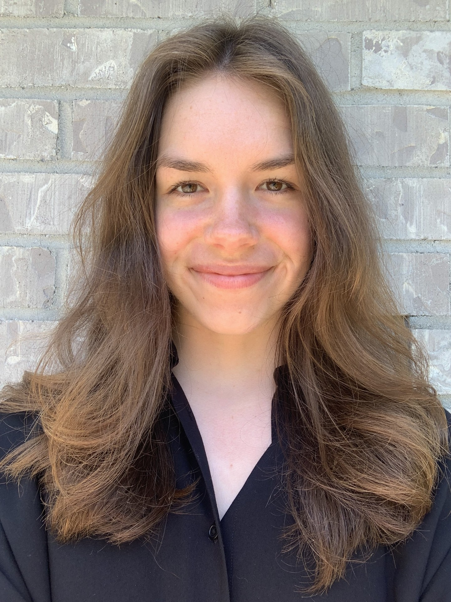

About
Carla Kolze is a student at the University of Idaho. She studies Computer Science is in her senior year. She has had internships at Avangrid and Holland and Hart, and she really enjoyed H&H. Don't be surprised to see her in Boise next year. Of course, she's not actually from Boise. She's from Washington ! Obviously. Don't get anything twisted. The Pacific Northwest is kind of the ace of all spades. Boise's not unbearably far though.
A more detailed look at her classes would inform you that she has taken Software Engineering, Embedded Systems, Data Structures, Operating Systems, Compilers, and Machine Learning. She is currently taking Databases, Semantic Web, Networking, and Capstone. Her capstone project is on designing a python GUI that can model electromagnetic waves. This project will last all year. But that means next semester it might be the only programming she has to do!
There's more to Carla than just school though. She has a dog that is awesome. She walks said dog. And also walks in general. Up mountains. And other things. Not only walks, Carla sometimes runs. Wow!we all chant. Because the best part about running is running for sports. such as the ultimate sport. ULTIMATE FRISBEE. She is on the team at U of I. Or perhaps I should say runs the team. With the help of the rest of leadership. She's on the team to play though, not to run the whole thing. Sometimes people just have to step up.